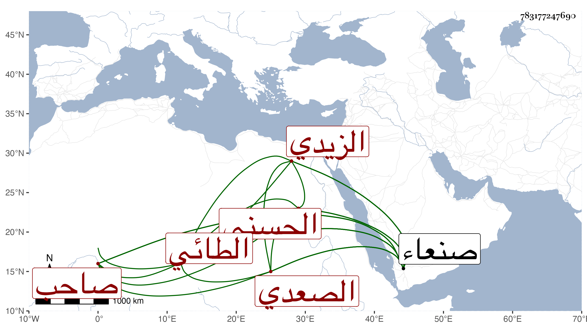

0902Sakhawi.DawLamic.ITO20230111-ara1.EIS1600.783177247690
Biography ID: 783177247690
1243
صلاح بن محمد بن علي الحسني الزيدي الطائي الصعدي صاحب صنعاء ، له ذكر بعيد الأربعين من حوادث إنباء شيخنا ، وقرأت بخطى في موضع آخر صلاح بن علي بن محمد بن أبي القسم الزيدي اجتمع الزيدية بعد موت الناصر صلاح الدين محمد بن علي بن محمد بن علي بن محمد بن علي صاحب صنعاء على تملكه صنعاء ولقبوه بالمهدي وذلك في أوائل سنة أربعين .
